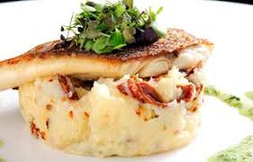

Te inai, also known as fried parrotfish, is a dish made from inai, a colorful reef fish common in Kiribati. Typically served whole, the fish is first marinated in a combination of lemon juice, garlic, and seasonings before being deep-fried in hot oil until it is crispy. Typically, mashed pumpkin purée and a crisp salad are served alongside fried parrotfish.
